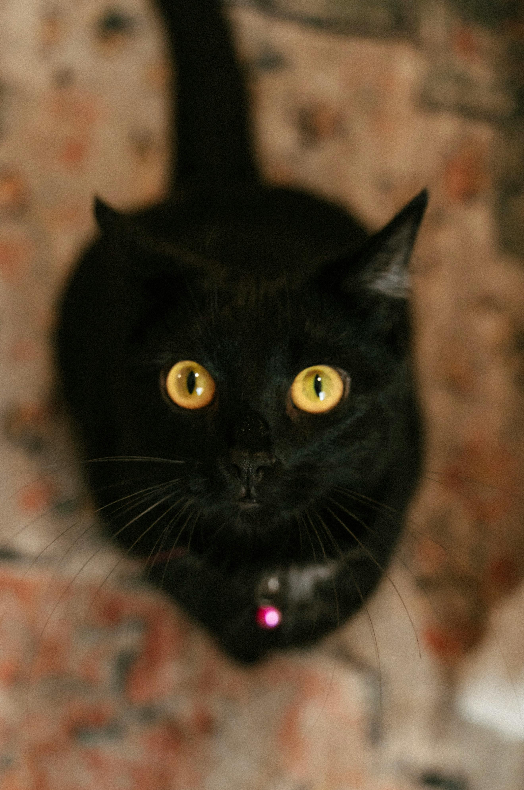

Bem-vindo ao Miau, o site de adoção de gatos!

Nome: Luna
Idade: 1 ano
Sexo: femêa
Descrição: Gato brincalhão e amoroso.

Nome: Garfield
Idade: 2 anos
Sexo: Macho
Descrição: Muito carinhoso e gosta de colo.

Nome: Neve
Idade: 9 meses
Sexo: Macho
Descrição: Adora brincar e fazer novos amigos.

Nome: Lua
Idade: 3 meses
Sexo: Femêa
Descrição: Observadora e ótima companheira.